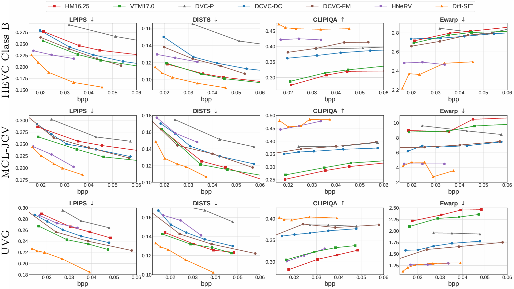
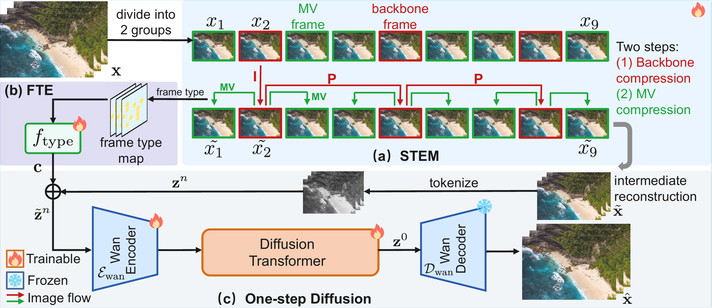
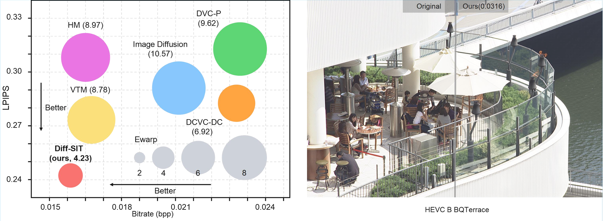
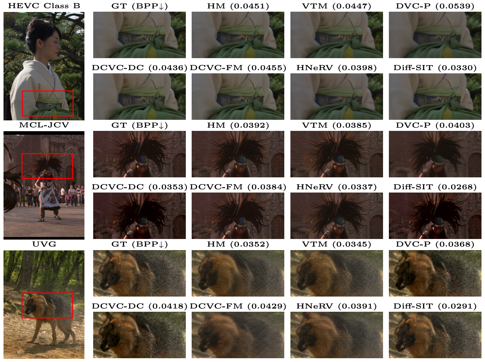
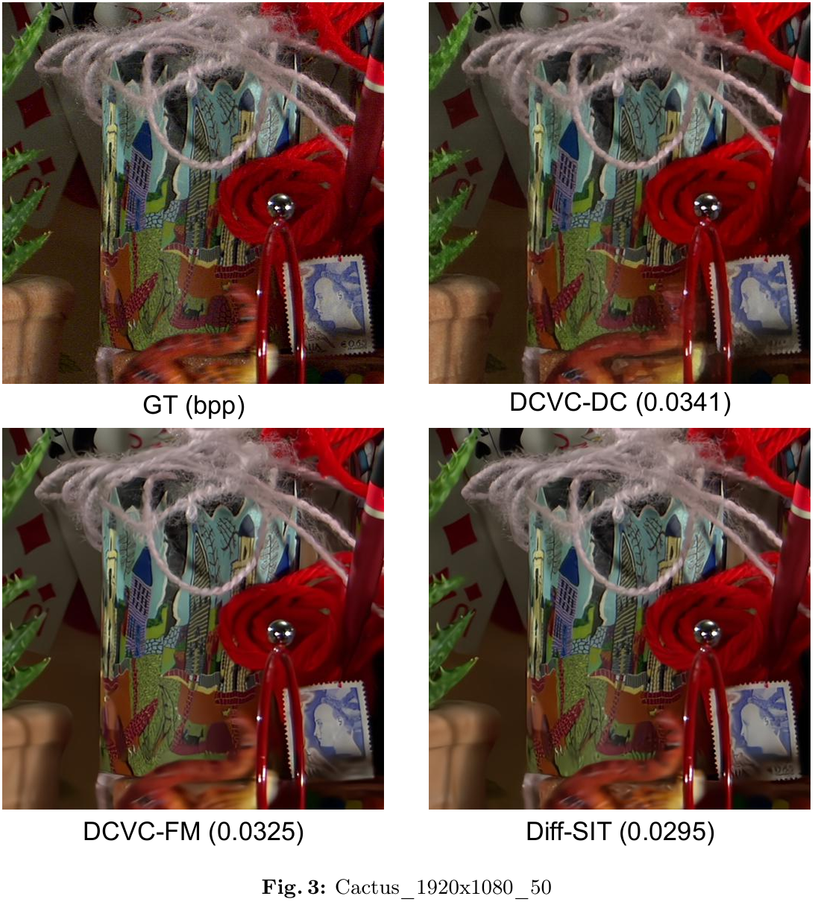
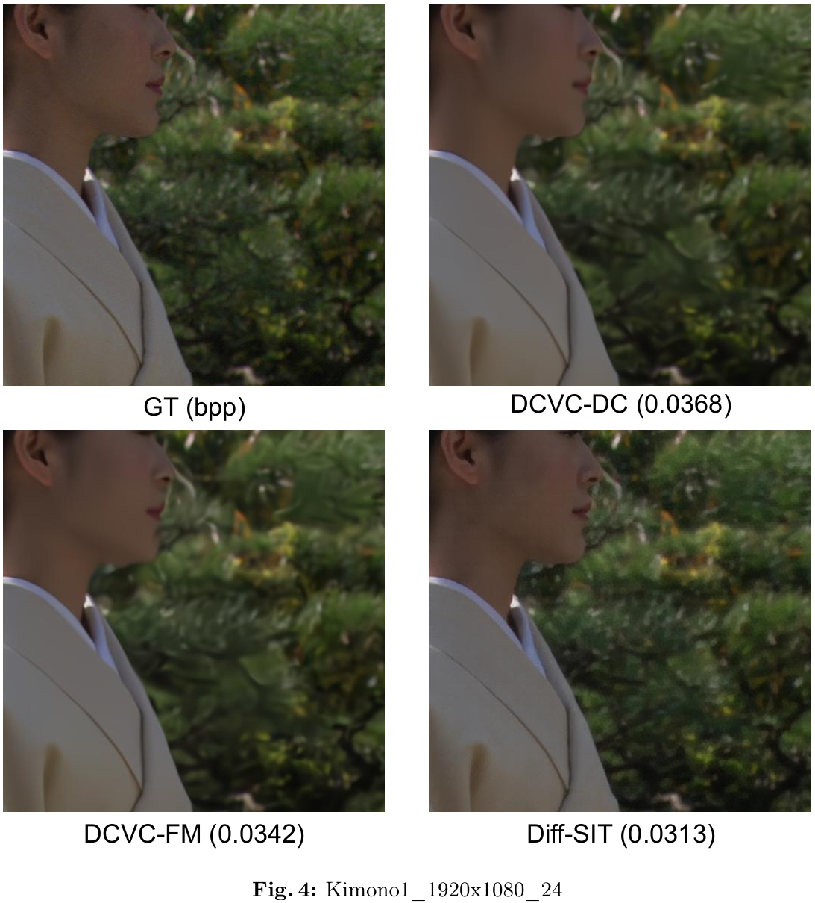
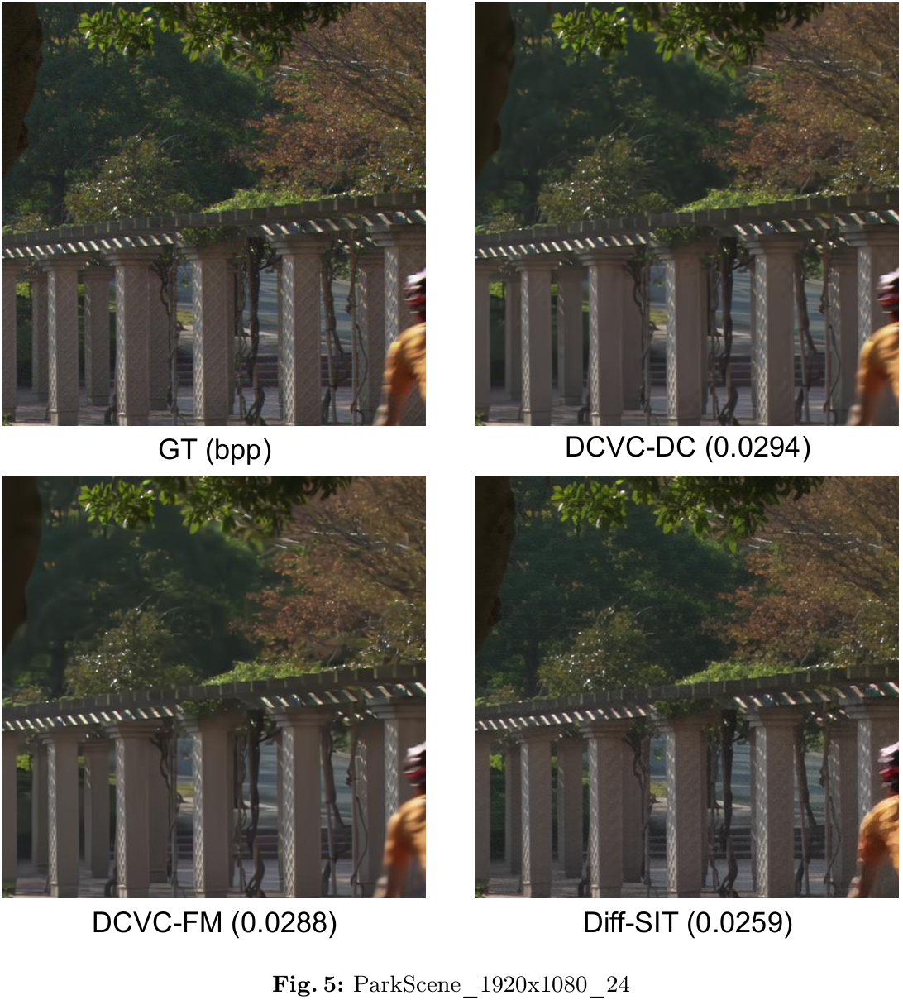

- Rate-Perception-Time Coherence Results (Fig. 5 of the main paper)

Video compression aims to maximize reconstruction quality with minimal bitrates. Beyond standard distortion metrics, perceptual quality and temporal consistency are also critical. However, at ultra-low bitrates, traditional end-to-end compression models tend to produce blurry images of poor perceptual quality. Besides, existing generative compression methods often treat video frames independently and show limitations in time coherence and efficiency. To address these challenges, we propose the Efficient Video Diffusion with Sparse Information Transmission (Diff-SIT), which comprises the Sparse Temporal Encoding Module (STEM) and the One-Step Video Diffusion with Frame Type Embedder (ODFTE). The STEM sparsely encodes the original frame sequence into an information-rich intermediate sequence, achieving significant bitrate savings. Subsequently, the ODFTE processes this intermediate sequence as a whole, which exploits the temporal correlation. During this process, our proposed Frame Type Embedder (FTE) guides the diffusion model to perform adaptive reconstruction according to different frame types to optimize the overall quality. Extensive experiments demonstrate that Diff-SIT establishes a new state-of-the-art in perceptual quality and temporal consistency, particularly in the challenging ultra-low-bitrate regime.

Diff-SIT Pipeline. Diff-SIT consists of three key components, matching the diagram from (a) to (c): (1) Sparse Temporal Encoding Module (STEM): sparsely encodes the original frame sequence into an information-rich intermediate reconstruction, achieving significant bitrate savings via backbone and MV compression; (2) Frame Type Embedder (FTE): maps each frame’s type (backbone vs. MV) to a conditioning embedding for adaptive downstream reconstruction; (3) One-step Diffusion: refines the full intermediate sequence in a single diffusion step with the Wan encoder, diffusion transformer, and Wan decoder, exploiting temporal correlation to produce the final reconstructed frames.

Diff-SIT achieves superior performance across multiple metrics:
We achieve impressive performance on video compression tasks.





@misc{zhou2026efficientvideodiffusionsparse,
title={Efficient Video Diffusion with Sparse Information Transmission for Video Compression},
author={Mingde Zhou and Zheng Chen and Yulun Zhang},
year={2026},
eprint={2603.18501},
archivePrefix={arXiv},
primaryClass={cs.CV},
url={https://arxiv.org/abs/2603.18501}
}